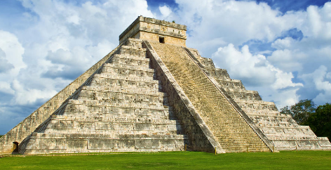

Es uno de los principales sitios arqueológicos de la península de Yucatán, en Mexico que originalmente dio forma a una cuidad maya de la época precolombinadominada por el templo de Kukulkán.
Esta construcción sirvió como templo para el Dios Kuklukán y consiste en una pirámide con una serie de terrazas cuadradas con escaleras que suben desde cada uno de los cuatro lados, la misma hasta la parte superior.